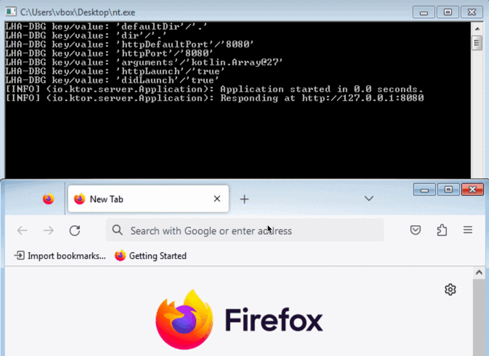

Новости
Возвращение к разработке «ПСКОВа»
2024-11-14 00:00

«ПСКОВ» сегодня
Итак, у нас есть старая версия «ПСКОВа», а нам нужна новая с улучшенными характеристиками.
Первым делом стоит вспомнить, из чего состоит «ПСКОВ»:
- Непосредственно генератор в виде веб-страницы на HTML + JavaScript
- Вспомогательный скрипт Python для сохранения генерируемых файлов на диске
Вспомогательный скрипт нужен по одной причине: веб-страницам запрещено общаться с локальной файловой системой по соображениям безопасности.
Скрипт представляет из себя крошечный веб-сервер со следующими командами:. . .
Звук и поиск нового курса
2024-10-11 00:00
Звук
К середине сентября добавил поддержку звука, однако, на этом проект двумерной приключенческой игры «Хвост и тень» остановился, т.к. из проекта ушёл идейный вдохновитель Женя.
Поиск нового курса
В сентябре я заметил падение интереса к проекту и со стороны подписчиков. Объяснил я это себе тем, что результат функционально и графически не соответствует ожиданиям аудитории.
Поэтому решил проверить пару вариантов оживления проекта:. . .
Переключение сцен
2024-09-06 00:00
Август
В августе сделал переключение сцен, после чего стало возможно следующее:
- при нажатии в заставке кнопки «Начать игру» переходить к уровню с тремя этажами
- при выборе двери переходить на другой этаж
- при выборе телевизора переходить к переключению каналов
- при переключении каналов менять изображение в телевизоре
Таким образом, сцены хорошо решают вопросы как фокусирования на предметах,. . .
Переосмысление
2024-08-12 00:00

По планам за июль я должен был доработать инструмент для трансляцию кода из Python в JavaScript. Этого не произошло, потому что появились более приоритетные задачи.
Какая задача может быть приоритетнее разработки инструмента? Разработка игры, конечно же! Итак, возвращаемся в начало июля 2024-го года…
Геймджем
В начале июля 2024-го года закончился трёхдневный геймджем от «Начни игру», в котором я участвовал. Целью моего участия в геймджеме было как проверить свои игровые наработки в условиях,. . .
Графический интерфейс «Памяти»
2024-07-04 00:00
Графический интерфейс «Памяти»
В июне реализовал графический интерфейс игры «Память» на Python с помощью Python Arcade.
В ходе поиска наиболее удобного инструмента создания ресурсов (ассетов) остановился на обычной тетрадке в клетку:

Для дополнительной проверки качества архитектуры портируемого кода участвовал в трёхдневном геймджеме от «Начни игру» с игрой «Память», оформленной под требования конкурса.
Выглядит итоговая игра следующим образом (сборка Windows64):. . .
Текстовый интерфейс «Памяти»
2024-06-14 00:00
Текстовый интерфейс «Памяти»
В мае реализовал текстовый интерфейс игры «Память» на Python. В C++ перевёл инструментом.
Реализация логического игрового цикла привела к появлению контроллера, управляющего контекстом. Создание контроллера на Python прошло без происшествий, а вот с версией для C++ пришлось помучиться. Мучения были вызваны тем, что контроллер использует std::any из C++17, а инструмент ограничен C++11 с целью поддержки OpenWrt.
Что касается объёма кода, то картина получилась следующей (в строках):. . .
Игровая логика «Памяти»
2024-05-03 00:00
Игровая логика «Памяти»
В апреле реализовал игровую логику игры «Память» на Python в виде модели ограниченного языка и успешно перевёл её инструментом в C++.
Модель ограниченного языка предполагает следующую архитектуру из двух частей:
- контекст состояния
- чистые функции без побочных эффектов, работающие лишь с контекстом
Контекст состояния игровой логики на Python получился следующим (C++):
```python class memory_Context: def init(self): self.hiddenItems = [] self.mismatchedItems = []. . .
Первый пример портируемого кода
2024-04-11 00:00
Выбор платформ для портирования
Для подтверждения портируемости кода я выбрал следующие платформы и языки:
- C++: Linux, macOS, OpenWrt, Windows
- JavaScript: Chrome, Firefox, Safari
- Kotlin: Android
- Python: Linux, macOS, Windows
- Swift: iOS, macOS
На указанных языках я сделал простейший аналог «Hello World», тем самым изучив требования каждой из платформ.
Отдельно отмечу, что самой сложной для обуздания платформой оказалась OpenWrt, т.к. поддержка моего маршрутизатора TP-Link TL-MR3020 r1 закончилась в 2018-м году. Пришлось ставить старую версию OpenWrt, что заняло три недели.. . .
Шина-iOS
2024-03-10 00:00
Первая реализация Шины для iOS
За январь и февраль довёл реализацию шаблона Шина на Swift до хорошего состояния для iOS.
Провёл нагрузочное тестирование. Оказалось, что общение элементов приложения через Шину примерно в 92 раза медленнее обычного вызова функции. И это говорит не о том, что Шина плоха. Наоборот, это говорит о том, что Шина должна использоваться в архитектурных склейках кода, что позволяет сократить такой код примерно на 30%.
Так выглядит пример с использованием нескольких состояний, отображаемых. . .
Страница 2 из 9